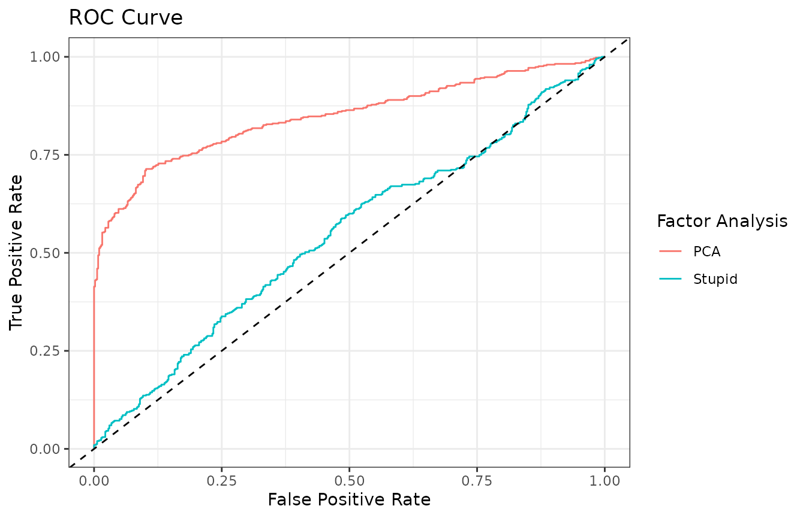
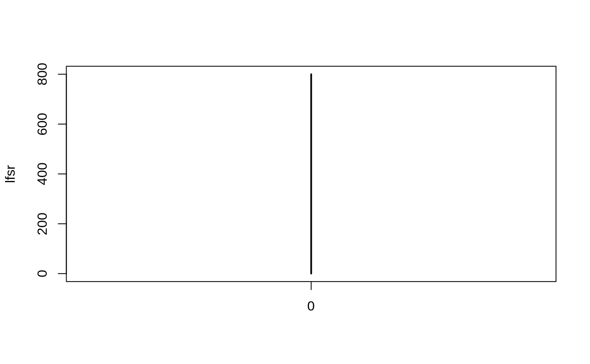

This vignette describes how to build your own factor analysis functions for use in vicar’s primary functions vruv4, ruv3, mouthwash, backwash, and ruvb. These methods are described in detail in Gerard and Stephens (2020) and Gerard and Stephens (2021).
fa_func in vruv4, ruv3, mouthwash, and backwash
A factor analysis is a list of three point estimates {\(\alpha\), \(Z\), \(\Sigma\)} from the following model \[
Y = Z\alpha^T + E,
\] where \(Y\) is \(n\) by \(p\), \(Z\) is \(n\) by \(r\), \(\alpha\) is \(p\) by \(r\), and \(E\) contains independent Gaussian errors with \(p\) by \(p\) diagonal column covariance matrix \(\Sigma\). The user-specified function fa_func is assumed to return estimates from this model.
fa_func should take as input the following elements
Y: A matrix of numerics. For the rest of this vignette, we say that Y has \(n\) rows and \(p\) columns.r: The rank of the factor analysis.fa_func in fa_args.fa_func should output a list with the following elements
alpha: A \(p\) by r matrix. The estimated factors.Z: An \(n\) by r matrix. The estimated loadings.sig_diag: A \(p\)-length numeric vector with non-negative entries. The estimated column-wise variances.Note that alpha and Z should still be matrices even when \(r\) is 1.
Because of the way that the data, \(Y\), were derived, only certain factor analyses make sense. That is, the factor analysis should be left orthogonally equivariant. What this means is that if \(Z_1\), \(\alpha_1\), and \(\Sigma_1\) are estimates from \(Y\) and \(Z_2\), \(\alpha_2\), and \(\Sigma_2\) are estimates from \(QY\) for any orthogonal matrix \(Q\) (where \(Q^TQ = QQ^T = I_n\)), then \[ Z_1\alpha_1 = Q^TZ_2\alpha_2 \] and \[ \Sigma_1 = \Sigma_2. \]
I’ve included a function, fa_tester, to test whether a user-provided factor analysis satisfies all of these conditions.
The default factor analysis for all methods is pca_naive. We can compare its performance to a stupid estimator that always returns the identity matrix padded with zeros for the estimate of \(\alpha\), the first \(r\) left singular vectors of \(Y\) for the estimate of \(Z\), and a vector of ones for sig_diag.
library(vicar)
library(ggplot2)
fa_stupid <- function(Y, r) {
p <- ncol(Y)
n <- nrow(Y)
svY <- svd(Y)
alpha <- rbind(diag(r), matrix(0, nrow = p - r, ncol = r))
Z <- svY$u[, 1:r, drop = FALSE]
sig_diag <- rep(1, p)
return(list(alpha = alpha, Z = Z, sig_diag = sig_diag))
}fa_stupid does indeed technically work as a factor analysis, as demonstrated by fa_tester
tout <- fa_tester(fa_stupid)
tout## $ok
## [1] TRUELet’s generate some sample data where the covariate of interest is the second column of \(X\).
## Generate data and controls ---------------------------------------------
set.seed(1327)
n <- 13
p <- 1001
k <- 2
q <- 3
is_null <- rep(FALSE, length = p)
is_null[1:501] <- TRUE
ctl <- rep(FALSE, length = p)
ctl[1:201] <- TRUE
X <- matrix(stats::rnorm(n * q), nrow = n)
B <- matrix(stats::rnorm(q * p), nrow = q)
B[2, is_null] <- 0
Z <- X %*% matrix(stats::rnorm(q * k), nrow = q) +
matrix(rnorm(n * k), nrow = n)
A <- matrix(stats::rnorm(k * p), nrow = k)
E <- matrix(stats::rnorm(n * p, sd = 1 / 2), nrow = n)
Y <- X %*% B + Z %*% A + EAnd let’s compare using fa_stupid against the default pca_naive.
ruv4out <- vruv4(Y = Y, X = X, ctl = ctl, cov_of_interest = 2, include_intercept = FALSE)## Number of confounders not provided so being estimated with package sva.## limma estimated df = Inf . Changing likelihood to "normal".
ruv4out_stupid <- vruv4(Y = Y, X = X, ctl = ctl, cov_of_interest = 2, include_intercept = FALSE,
fa_func = fa_stupid)## Number of confounders not provided so being estimated with package sva.
## limma estimated df = Inf . Changing likelihood to "normal".
order_4p <- order(ruv4out$pvalues)
order_4p_stupid <- order(ruv4out_stupid$pvalues)
fpr4 <- cumsum(is_null[order_4p]) / sum(is_null)
tpr4 <- cumsum(!is_null[order_4p]) / sum(!is_null)
fpr4stupid <- cumsum(is_null[order_4p_stupid]) / sum(is_null)
tpr4stupid <- cumsum(!is_null[order_4p_stupid]) / sum(!is_null)
dfdat <- data.frame(fpr = c(fpr4, fpr4stupid), tpr = c(tpr4, tpr4stupid),
fa = c(rep("PCA", p), rep("Stupid", p)))
ggplot(data = dfdat, mapping = aes(x = fpr, y = tpr, col = fa)) +
geom_line() +
geom_abline(slope = 1, intercept = 0, col = 1, lty = 2) +
theme_bw() +
ggtitle("ROC Curve") + xlab("False Positive Rate") +
ylab("True Positive Rate") +
scale_color_discrete(guide = guide_legend(title = "Factor Analysis"))
fa_func in ruvb
Providing a user-specified fa_func for ruvb is more complicated. We are assuming a more complicated model \[\begin{align}
\left(
\begin{array}{cc}
Y_{21} & Y_{22}\\
Y_{31} & Y_{32}
\end{array}
\right)
=
\left(
\begin{array}{cc}
\Omega_{21} & \Omega_{22}\\
\Omega_{31} & \Omega_{32}
\end{array}
\right)
+
E,
\end{align}\] where \(Y_{22}\) is unobserved, \(\Omega\) has some low-dimensional structure, and \(E\) has Gaussian errors with possibly dependent columns. fa_func returns an array of posterior draws from from \([Y_{22} | Y_{21}, Y_{31}, Y_{32}]\) when fitting some user-specified Bayesian model.
Let \(n\) be the number of samples, \(p\) be the number of genes, \(m\) be the number of control genes, and \(k\) be the number of covariates of interest. fa_func should take as input the following elements.
Y21 The upper left matrix of numerics. This is of dimension \(k\) by \(m\).Y31 The lower left matrix of numerics. This is of dimension \(n - k\) by \(m\).Y32 The lower right matrix of numerics. This is of dimension \(n - k\) by \(p - m\).k: The rank of the factor analysis when assuming a factor model for \(\Omega\). fa_func doesn’t need to use it if you aren’t assuming a factor model, but fa_func needs to have it as an argument.fa_func should return
Y22_array, a three-way array of dimension \(k\) by \(p - m\) by the number of posterior draws.The default value for fa_func is bfa_gs_linked. We can test a factor analysis for compatibility with ruvb using the function fa_tester_ruvb.
fa_tester_ruvb(fa_func = bfa_gs_linked, fa_args = list(nsamp = 20, display_progress = FALSE))## $ok
## [1] TRUEHere’s another technically OK (though stupid) factor analysis that just returns an array of 1’s
fa_stupid_ruvb <- function(Y21, Y31, Y32, k) {
dumb_est <- array(1, dim = c(nrow(Y21), ncol(Y32), 30))
return(list(Y22_array = dumb_est))
}
fa_tester_ruvb(fa_func = fa_stupid_ruvb)## $ok
## [1] TRUEWe can use fa_stupid_ruvb on the data in the previous section. But because it returns the same value every posterior draw, we obtain unhelpful lfsr’s of 0 for all points.
ruvbout <- ruvb(Y = Y, X = X, ctl = ctl, fa_func = fa_stupid_ruvb)## Number of confounders not provided so being estimated with package sva.